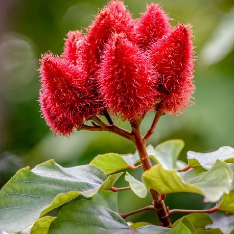

R
Roucou
Le roucou (Bixa orellana) est une espèce d'arbres ou d'arbustes des régions d'Amérique tropicale.
Les fleurs sont roses et il donne des fruits rouges à épines remplis de graines, rouges elles aussi.
La graine de roucou n'est pas comestible par elle-même. Elle est récoltée puis séchée pour en extraire la cire qui entoure les graines
Le roucou, ou annatto, ou achiote, utilisé en alimentation correspond à cette préparation. C'est un puissant colorant, et aussi un condiment, à la saveur légère de muscade poivrée.
